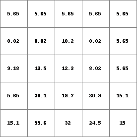
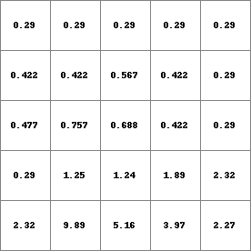

kinwavestate, kinwaveflux¶
kinwave
Kinematic Wave equation as state and flux
newstate,newflux = kinwavestate,kinwaveflux(ldd,
prevState,
qChan,
alpha,
beta,
nrTimeSlices,
timestepInSeconds,
dX)
- ldd: spatial, ldd
- prevState: initial state of the routine (state of the previous timestep) [m3]
- qChan: lateral inflow into the channel segment (cell) [m3/channellength/sec]
- alpha : parameter in Qh relation, see kinematic wave description
- beta : parameter in Qh relation, see kinematic wave description
- nrTimeSlices : spatial,non-spatial, number of timeslices in kinwave iterator.
- timestepInSeconds : non-spatial, scalar, length of the pcraster timestep [sec]
- dX : channel length through cell [m]
- newstate: resultant state of the routine [m3]
- newflux: resultant flux of the routine [m3/sec]
Operation¶
Kinwave is an implementation of the kinematic wave equations (function kinematic) according to the state-flux concepts that are also used with the accu-functions and the dynamic wave. Note that the implementation of the kinematic wave as is implemented in the function kinematic does not adhere to this scheme, new flows are determined based on flows in the previous timestep. The interface of kinwave accepts a state as input parameter and calculates a state (amount of water in the cell at the end of the timestep) and a flux (flow integrated over the entire timestep) and thus corresponds to the state-flux framework of the mentioned functions.
Examples¶
- • pcrcalcbindingState1 = State1.map;Flux1 = Flux1.map;Ldd = Ldd.map;Material = Material.map;initialreport State1, Flux1 = kinwavestate,kinwaveflux(Ldd,Material,0,1.5,0.6,5,15,10);• pythonLdd = readmap(“Ldd.map”)Material = readmap(“Material.map”)State1 = kinwavestate(Ldd,Material,0,1.5,0.6,5,15,10)Flux1 = kinwaveflux(Ldd,Material,0,1.5,0.6,5,15,10)
State1.map Flux1.map Ldd.map Material.map  